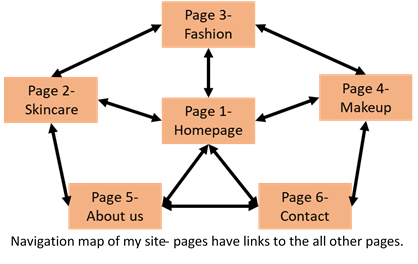
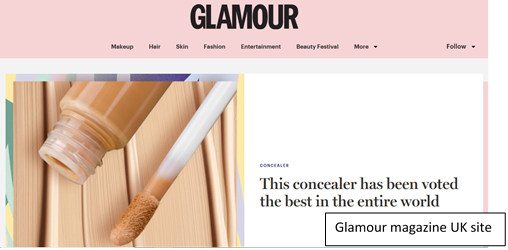
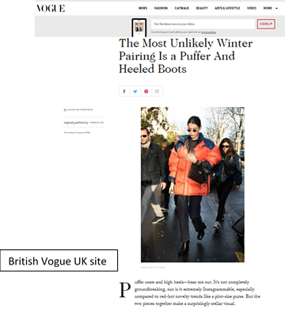
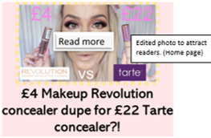
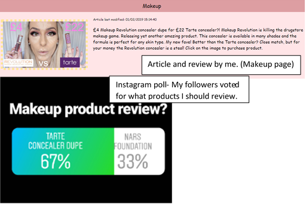
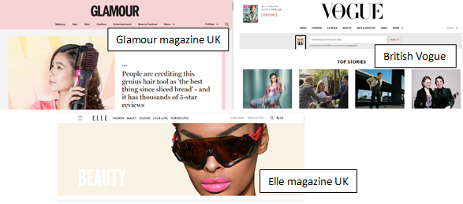
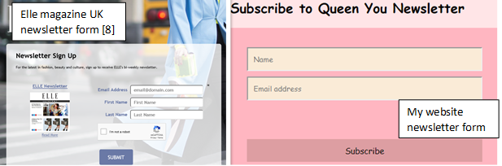
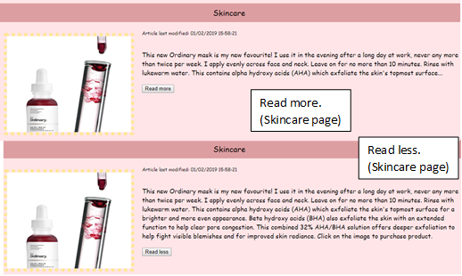
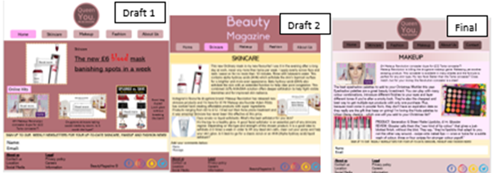

Report: Large Coursework
Noshin Begum
My site “Queen You” is an online newsletter platform. This is a newsletter reporting up to date beauty, fashion, makeup and skincare news and hacks. The story behind my site is to help any novice or experienced makeup and beauty enthusiasts. A large group of people feel there is a lack of sites providing honest and helpful content hence what I wanted to achieve. The navigation structure I chose to apply to my site is a web structure. This allows users no limit when navigating through the site also allows them constant access to all the pages without having to go to the homepage or previous page. 
When creating my website, I was inspired by different elements. Social media was a huge influence on what site I wanted to create and the features I wanted. Being a Instagram beauty influencer my audience and followers have always requested a site where they could be kept up to date with beauty and fashion news, hacks and reviews as well as easy to navigate for anyone and everyone; this influenced me to create a site to fit that purpose. Another inspiration was Glamour Magazine UK Site [1]; I loved the way their content was organised in different categories as well as having exciting articles promoted on the homepage. I also like the pale pink colour scheme and black font which stood out clearly.

Another influence was British Vogue website [2]; specifically, the Fashion page. The way Vogue added a main image relating to the article but is also attracting to the audience, so they want to read it. The way the articles have been written is different to other newsletters which I used for my site too, it is more conversational with the audience and letting them know specific opinions of the person writing the articles more than the “popular” opinion.

This is what my followers and I have wanted for a site is to show honest opinions and hacks that work as well as easy to navigate and just simpler than the online beauty sites existing.
My main aim of this site is to have it accessible to anyone and everyone wanting to learn about beauty and fashion. One way I made it accessible is I added ‘Alt Texts’ to every image describing the image for those who miss the image and allows for screen readers to read. Another is I chose colours carefully so not only is it aesthetically matching my theme, but it also allows users to see the dark text clearly against the pale background. I have also made the website responsive, so it can be used on different sized windows and devices without hampering the quality or easy to use.
Not only is my website accessible, I have also added features and made certain design decisions to ensure it has better usability. One design decision I made was to have less interactions from the users required; allows users to quickly and clearly use the site. I also have clear and familiar navigations layout; this improves my website usability as the users can easily navigate through the site and find it easy to use as it is a common layout. Using images; this helps the audience know what the article is referring to and helps them find what article and products they want to read about on the page.
I had to learn how to add JavaScript into my HTML page using script tags as well as making the output look better using my CSS stylesheet. For my website I wanted my audience to be able to sign up to the newsletter, so they can keep up to date with my site. In order to do this, I had to include JavaScript, I used W3Schools [3] to help me. I used their JavaScript/HTML code and CSS code. However, I changed the JavaScript/HTML code to have less requirements and make it quicker for the users to sign up by just entering their name and email and clicking subscribe. I altered the CSS code to change the size, font, colour scheme, positioning to match my website theme. Also, from W3Schools and the skills I learned from adding a subscribe form helped me to add JavaScript/HTML to show when the articles were last modified (dynamic content for my site) [4].
For the images [10], I used them from Glamour magazine site [1] and edited them to have different titles on them to promote them to the audience, so they want to read the article.

I also for my website I researched the products myself and wrote reviews for certain products by trying them out. I created content for my site that I knew my followers on Instagram (my target audience) wanted to know about and couldn’t find elsewhere. To find out what products they wanted to know about, I did multiple Instagram polls [5] as market research and they could vote what products they wanted to read about on my site.

For my website, specifically my fashion page, I created my own lookbook video. I styled the looks, filmed myself and a model, edited the video and added it into my page. This was an addition to my website as my target audience were struggling to visualise different outfits; I created 2 looks and added the products links below the video so the audience can see what they like and how I would style different outfits.
I designed my own logo by looking at the different colour schemes and fonts other magazines use and changed it to match more of my style for the website as well as keeping it clear colours for everyone (accessibility). I used Glamour Magazine [1], Vogue Magazine [6], Elle Magazine [7] to research what colours are best to use. 
The aspects that worked well was the colour scheme, it matches the requirements of accessibility by having a good contrast of light and dark. I think the articles and video I created works well as the information is honest, and helpful for the audience. I also think the subscribing form and last date modified for the articles makes the website look like a newsletter as well as function like a newsletter; it helps the practicality and the layout.

Another aspect that worked well specifically helping my website become more accessible and better usability is I added “read more” and “read less” buttons [9] for my longer articles on the skincare pages so the user can read the summary of the review and if they want to find out more can do so willingly.

Another aspect that helped my website is adding a automatic slideshow using w3School JavaScript library [11] and editing the code to fit my website theme, images and duration appropriately. I think this made the Skincare page more attractive as well as gives the readers more visual aid to support my article.
One aspect that I think helped my design process of the website was planning drafts on how the site and its pages should look. I designed 2 drafts before designing my final plan. This helped me visualise what I want more website to look like.

One aspect I would improve for next time is I would get the audience to give their input on what colours they would prefer on the website. Another improvement would be instead of having an Image logo, I would have the brand name in a bold font in the header to give a “high fashion” magazine look.
- Glamour magazine- inspiration
[1] https://www.glamourmagazine.co.uk/
- British Vogue magazine- article layout
[2] L.Satenstein, “British Vogue”, 2018. [Online]. Available: https://www.vogue.co.uk/article/how-to-wear-a-puffer-and-heels [Accessed: 20-Dec-2018].
- W3Schools – email newsletter form JavaScript
[3] https://www.w3schools.com/howto/howto_css_newsletter.asp
- W3Schools – date last modified JavaScript
[4] https://www.w3schools.com/jsref/prop_doc_lastmodified.asp
- My Instagram – polls/market research
[5] https://www.instagram.com/queennoshin/?hl=en
- British Vogue magazine- inspiration
[6] https://www.vogue.co.uk/
- Elle magazine- beauty page inspiration
[7] https://www.elle.com/beauty/
- Elle magazine- subscribe newsletter form
[8] https://preferences.hearstmags.com/brands/ELM/subscribe.aspx?authId=9875786B-CB0E-4B97-9F7A-8DFCFA670ECD&maj=WNL&min=follow
- W3Schools – read more/read less JavaScript
[9] https://www.w3schools.com/howto/howto_js_read_more.asp
- Glamour magazine UK – Images and inspiration
[10] S.Thompson, 'Glamour', 2018. [Online]. Available: https://www.glamourmagazine.co.uk/article/makeup-revolution-conceal-and-define-concealer-review. [Accessed: 20- Dec- 2018].
- W3Schools – JavaScript library for automatic slideshow
https://www.w3schools.com/w3js/w3js_slideshow.asp